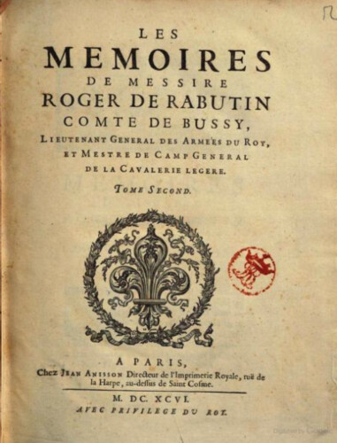

Images

Le char d'Apollon, conduit par le Temps lors de la première journée des Plaisirs de l'Ile enchantée
Contre-épreuve d’un dessin à la pierre noire, 56 x 41,4 cm, Paris, Archives nationales, CP O1 3238, n° 15

Représentation du ballet d’Alcine lors des Plaisirs de l’Ile enchantée

Moron et un ours, scène de la Princesse d’Elide représentée lors des Plaisirs de l’Ile enchantée
Copie de la première planche représentant le château de Versailles pour le recueil des Plaisirs de l’Ile enchantée
>Dessin à la plume, à l'encre noire et au lavis gris, 60,8 x 90,3 cm, Paris, Archives nationales, CP O1 3239, n° 81

Le char d'Apollon, conduit par le Temps lors de la première journée des Plaisirs de l'Ile enchantée
La machine de Pan et de Diane
Décor de feuillée lors de la première journée des Plaisirs de l’Ile enchantée

Représentation du théâtre dressé dans les jardins de Versailles sur lequel est joué la Princesse d’Elide donnée lors des Plaisirs de l’Ile enchantée

La marche du carrousel lors de la première journée des Plaisirs de l’Ile enchantée

Alcine devant son palais accompagnée de ses suivantes lors des Plaisirs de l’Ile enchantée

Le Printemps
L'Automne
Le char d'Apollon, conduit par le Temps lors de la première journée des Plaisirs de l'Ile enchantée

Cavalier au pied d'un cheval
Pan et Diane avec leur suite

Les Saisons avec leur suite

La Bradamante ridicule représentée devant le Roy

La Bradamante ridicule représentée devant le Roy

Première journée des Plaisirs de l'île enchantée. Le roi et ses chevaliers dans l'arène écoutant les récits d'Apollon et des quatre Siècles
Estampe, 27,6x42,3cm, Paris, BNF, Estampes, RESERVE QB-201 (46)-FOL, Hennin 4209.
Première journée. Course de bague disputée par le Roy, et ses cheualiers, representans Roger et les autres cheualiers enchantés dans l'Isle d'Alcine
Estampe, 27,6 x 42 cm, Paris, BNF, Estampes, RESERVE QB-201 (46)-FOL, Hennin 4210

Première journée. Festin du Roy, et des Reynes auec plusieurs Princesses et Dames serui de tous les mets et presens faits par les Dieux et les quatre saisons
Estampe, 27,5 x 42,2 cm, Paris, BNF, Estampes, RESERVE QB-201 (46)-FOL, Hennin, 4212

Premiere journée. Marche du Roy, et de ses cheualiers, auec toutes leurs suittes, au tour du Camp de la course de bague, representant Roger, et les autres Cheualiers enchantez dans l'Isle d'Alcine
Estampe, 27,6 x 42,3 cm, Paris, BNF, Estampes, RESERVE QB-201 (46)-FOL, Hennin 4208
Première journée. Comparse des quatre saisons, auec leur suitte de concertans, et de porteurs de presens, et la machine de Pan, et de Diane, auec leur suitte de concertans, et de bergers portans les plats pendant le recit des vns et des autres deuant le Roy, et les Reynes
Estampe, 27,6 x 42,2 cm, Paris, BNF, Estampes, RESERVE FOL-QB-201 (46), Hennin 4211

Seconde Journée. Theatre fait dans la mesme allée, sur lequel la Comédie, et le Ballet de la Princesse d'Elide furent representéz
Estampe, 28,2 x 42,8 cm, Paris, Estampes, RESERVE QB-201 (46)-FOL, Hennin 4213
Troisiesme journée. Rupture du Palais et des enchantemens de l'Isle representé par vn feu d'Artifice
Estampe, 28,2 x 42,9 cm, Paris, BNF, Estampes, RESERVE QB-201 (46)-FOL, Hennin 4215

Troisiesme journée. Theatre dressé au milieu du grand Estang representant l'Isle d'Alcine, ou paroissoit son Palais enchanté sortant d'vn petit Rocher dans lequel fut dancé vn Ballet de plusieurs entrées, et apres quoy ce Palais fut consumé, par vn feu d'artifice representant la rupture de l'enchantement après la fuite de Roger
Estampe, 27,1 x 42,4 cm, Paris, BNF, Estampes, RESERVE QB-201 (46)-FOL, Hennin 4214.

Les plaisirs de l'Isle enchantée, ou les festes, et diuertissements du Roy, à Versailles, Diuisez en trois journées, et commencéz le 7me. jour de may de l'année 1664
Estampe, 28 x 42,3 cm, Paris, BNF, Estampes, RESERVE QB-201 (46)-FOL, Hennin 4207.

L'Hiver
L'Eté

Le Printemps

L'Automne
Feu d'artifice tiré à Versailles
Imprimés
Mémoires de messire Roger de Rabutin, comte de Bussy. Tome 2

Courses de testes et de bagues faites par le roy et par les princes et seigneurs en l’année 1662.

Les Divertissemens de Versailles, donnez par le Roy au retour de la conqueste de la Franche-Comté, en l’année 1674. [Par A. Félibien.].

Recueil des gazettes nouvelles, ordinaires et extraordinaires. Relations et récits des choses avenues tant en ce royaume qu’ailleurs, pendant l’année mil six cent soixante-quatre.

Gazette.

« Les particularitez des divertissemens pris à Versailles par leurs Majestés », dans Recueil des gazettes nouvelles, ordinaires et extraordinaires. Relations et récits des choses avenues tant en ce royaume qu’ailleurs, pendant l’année mil six cent soixante-quatre.

Relation de la feste de Versailles. Du dix-huitième juillet mil six cens soixante-huit. Par André Félibien.

« Interdite », La Muze historique, Lettre V, Lettre en vers à Son Altesse Madame la Duchesse de Nemours. Du samedi 2 février 1664.

« Hazardée », La Muze historique, Lettre VII en vers à Son Altesse Madame la Duchesse de Nemours. Du 16 février 1664.

« Immanquable », La Muze historique, Lettre XVIII, Lettre en vers à Son Altesse Madame la Duchesse de Nemours.

"Avertissante", La Muze historique, Lettre XIX, Lettre en vers à Son Altesse Madame la Duchesse de Nemours. Du 17 mai 1664.
« Curieuse », La Muze historique, Lettre XXX, Lettre en vers à Son Altesse Madame la Duchesse de Nemours. Du samedi 2 août 1664.

« Régalante », La Muze historique, Lettre XXXI, Lettre en vers à Son Altesse Madame la Duchesse de Nemours. Du samedi 9 août 1664.

Journal d’Olivier Lefèvre d’Ormesson

Les plaisirs de l’isle enchantée.

Les Plaisirs de l'île enchantée
Les Plaisirs de l’isle enchantée, ou la Princesse d’Élide, comédie de M. Molière.
Les plaisirs de l’isle enchantée. Course de bague; collation ornée de machines; comedie, meslée de danse et de musique; ballet du palais d’Alcine; feu d’artifice; et autres festes galantes et magnifiques faites par le Roy a Versailles le VII. May M.DC.LXIV. et continuées plusieurs autres jours
Paris, imprimerie royale, 1673, Paris, BNF, Tolbiac, RES-V-498.
Manuscrits

Registre de La Grange (1658-1685) : précédé d’une notice biographique / publié par les soins de la Comédie-Française...[par Edouard Thierry]
Paris, J. Claye, 1876.

Registre de La Grange (1658-1685) : précédé d’une notice biographique / publié par les soins de la Comédie-Française...[par Edouard Thierry]
Paris, J. Claye, 1876.

Registre de La Grange (1658-1685) : précédé d’une notice biographique / publié par les soins de la Comédie-Française...[par Edouard Thierry]
Paris, J. Claye, 1876.

Registre de La Grange (1658-1685) : précédé d’une notice biographique / publié par les soins de la Comédie-Française...[par Edouard Thierry]
Paris, J. Claye, 1876.

Les Amours Deguisez, Ballet du Roy, Dansée par Sa Majesté, au mois de Fevrier 1664. Recueilly par Philidor l’aisné en 1690
Paris, BNF, Musique, RES F-511

Comptes des menus plaisirs de la chambre du roi.
1664, Paris, Archives nationales, KK 213, fol. 25v. Publié par Campardon, Nouvelles Pièces sur Molière, p. 40-41.
Marché de fourniture de bois entre Antoine Petit, maître charpentier, et Charles de Vigarany, entrepreneur des ballets du roi, pour le théâtre des Plaisirs de l’Île enchantée à Versailles.
Compte des Menus plaisirs et affaires de la Chambre du Roi de l’année 1664 rendu par Michel d’Aligre Trésorier, a été extrait ce qui suit au chapitre des Dépenses exraordinaires et inopinées.
1664 Paris, Archives nationales, O1 2984

Relazione del viaggio fatto dall’ill.mo Sig. Card.e Chigi
Rome, Biblioteca Apostolica Vaticana, Manuscrit Chigi E.II.38, p. 257 recto – 258 verso, 1664. Texte traduit par Tristan Alonge, en ligne
Rôle des dépenses du Trésor royal des quartiers de janvier et avril (paiement à Molière).
Mémoire du traitement fait par la Maison du Roi à Monsieur le Cardinal Chigi.
« Les plaisirs de l’isle enchantée, ordonnéz par Louis XIV, roy de France et de Navarre, à Versailles, le 6 may 1664, » par DE BIZINCOURT.
Manuscrit relié aux armes du roi, Paris, BNF, Manuscrits, Ms. Français 7834

Les Plaisirs De L'Isle Enchantée Festes Galantes, et Magnifiques, faites par Le Roy à Versailles, le 7e May 1664.